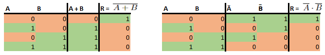

Titel: Project 1: CA_PROJECT_1
Dit verslag werd opgesteld door:
De oplossing bestaat uit de volgende bestanden (geef alle bestanden op):
Om de twee theorieën van De Morgan te bewijzen met een waarheidstabel truthtabel zullen we ze individueel bekijken.
Allereerst, A+B = A · B. Bijgevoegd vind u de waarheidstabellen voor zowel het linker als het rechter lid.
De eerste R is het resultaat wanneer je de logische NOT ( ) operatie neemt van de voorgaande OR (+). De tweede R (rechts) is de logische AND (·) bewerkingen toe van de twee inversen van A en B. Zoals u kunt zien is de R voor beide hetzelfde, hieruit concluderen we dat de oorspronkelijke vergelijking effectief opgaat.
Voor de tweede theorie van De Morgan, A · B = A + B, maken we gebruik van dezelefde werkmethode. We stellen de waarheidstabellen van beide leden op.
Links is R nu het resultaat van de logische NOT van A en B. Rechts is R het resultaat van de logische OR van de inversen van A en B. Opnieuw is R in beide gevallen gelijk. Hieruit concluderen we dat ook hier de beide leden gelijk zijn elkaar.
((A · B) + (A · C) + (B · C)) · (A + B + C) = (A · B · C) + (A · B · C) + (A · B · C)
Om deze booleaanse vergelijking te bewijzen zullen we een reeks stappen doorgaan. We zullen het linkerlid omvormen naar het rechterlid.
Bij stap 6 bekomen we dezelfde bewerkingen als in het rechterlid van de eerder gegeven vergelijking. Hiermee is de gelijkheid bewezen.
Uit De Morgan volgt dat er twee manieren zijn om een NAND gate op te bouwen. Je kunt de NOT van een AND nemen, of de inverse van je inputs in een OR steken. We hebben voor opdracht 3 bijde methodes gebruikt. In opdracht 3.2 hebben we de ingebouwde NAND gate van logisim gebruikt.
Onze werkmethode hier was om voor zowel X als Y een booleaanse vergelijking op te stellen die voor elk bepaalde of X (of Y) aan of uit moest zijn. Vervolgens vereenvoudigden we telkens de booleaanse expressie.
X: (A · B · C) + (A · B · C) + (A · B · C)We zien dan dat we voor bijde expressies eenzelfde (B) · (A + C) bekomen. Dan is er ook nog een overige (A · C).

Om elk binair cijfer dat we opgeven weer te geven, moeten we een specifieke waarheidstabel opstellen. Deze waarheidstabel neemt een 3-bit binairgetal als invoer en heeft voor elk van de zeven segmenten een output met een waarde van 1 of 0 (true of false). De tabel beschrijft voor elk binair getal of een segment moet worden opgelicht of niet. Dit wordt gedaan door een waarde van 1 of true op te geven. Als een segment niet moet worden opgelicht om een getal weer te geven, bevat de tabel een 0 (of false). Deze tabel ziet er zo uit:

Vervolgens kun je voor elk segment [T-Z] een sum of products opstellen. Dit kan je zien als een reeks voorwaarden die niet allemaal waar moeten zijn, maar wanneer er één waar is, het segment wel aan zal springen.
Dit kunnen we eerst nog versimpelen voordat we 36 AND gates en 29 OR gates in logisim toevoegen. We kunnen uit deze formules 8 verschillende AND gates halen (die aangeven welk decimaal getal de binaire getallen representeren), en 7 OR gates (voor elk segment). Verder kun je ook nog het aantal NOT gates minimaliseren door voor elke input, ook een inverse lijn te trekken.

We hebben lang nagedacht over hoe we ons circuit konden versimpelen. Wij hebben geen andere manieren gevonden. Je kunt het wel visueel versimpelen door een decoder te gebruiken. Een circuit met minder gates konden we niet vinden.